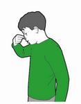

Bleeding
In this section you can find out what to do about bleeding and blood loss.
You can learn how to give first aid treatment for cuts, grazes, and nose bleeds as well as finding out what to do if someone is bleeding severely.
Cuts and grazes
Cuts and grazes are common injuries that can usually be treated at home.
Steps
- Clean the wound by rinsing it under running water or using alcohol-free wipes.
- Pat it dry using a gauze swab and cover it with sterile gauze. If you don’t have these, then use a clean, non-fluffy cloth.
- Raise and support the part of the body that’s injured. If it’s a hand or arm, raise it above the head. If it’s a lower limb, lay them down and raise the cut area above the level of the heart. This will help stop the bleeding.
- Remove the gauze covering the wound and apply a sterile dressing.
- If you think there’s any risk of infection then suggest they see a health care professional.
Nose bleeds
A nose bleed is when blood flows from one or both nostrils. It’s normally caused by the tiny blood vessels inside the nostrils being ruptured.
Common causes of nose bleeds include a blow to the nose, sneezing, picking or blowing the nose, and high blood pressure.
Steps
- If someone is having a nose bleed, your priority is to control the bleeding and keep their airway open.
- Get them to sit down (not lie down) as keeping the nose above the heart will reduce bleeding.
- Get them to lean forward (not backwards), to make sure the blood drains out through their nose, rather than down their throat which could block their airway.
- Ask them to breathe through their mouth and pinch the soft part of the nose, taking a brief pause every ten minutes, until the bleeding stops.
- Encourage them not to speak, swallow, cough, spit or sniff because this may break blood clots that may have started to form in the nose.
- If the bleeding is severe, or if it lasts more than 30 minutes, call 999 or 112 for medical help.

Severe Bleeding
When bleeding is severe, it can be dramatic and distressing.
If someone’s bleeding isn’t controlled quickly, they may lose a lot of blood, become unresponsive or develop shock.
Shock does not mean emotional shock; it is a life-threatening condition, often caused by loss of blood.With all open wounds, there’s a risk of infection, so wash your hands and use gloves (if you have any) to help prevent any infection passing between you both.
Steps
If there's an object in the wound
If there’s an object in there, don’t pull it out, because it may be acting as a plug to reduce the bleeding.
Instead, leave it in and apply pressure either side of it with a pad (such as a clean cloth) or fingers, until a sterile dressing is available.
If there's no object in the wound
Follow the steps below for treating severe bleeding.
- Press it: apply direct pressure to the wound
- Call 999/112 for emergency help
- Firmly secure dressing with a bandage
- Treat for shock
- Support the injured part